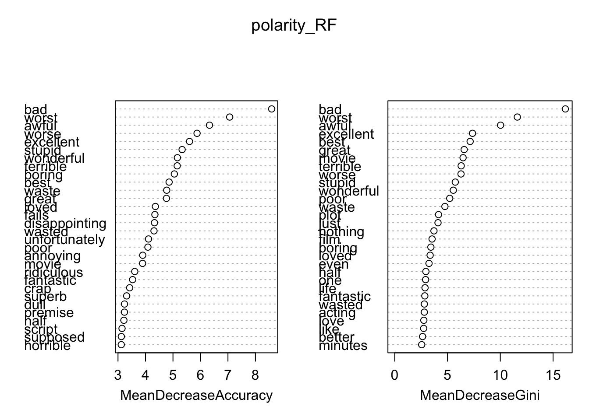

In this notebook, we’ll learn about supervised learning models.
Front-end matters
Let’s load up our packages. There’s one change from prior tutorials here: we’re adding in quanteda.textmodels. Note that this isn’t strictly necessary; many of the models we’ll think about actually work with other packages or the quanteda code is based on those other packages. But we know by using quanteda.textmodels package that the data and the models are going to place nice together.
We are also going to add the caret library for supervised learning models. caret offers a one-stop shop for a host of machine learning models, as well as some nice functionality for creating, fitting, and debugging supervised learning models. The latter part is particularly helpful for us today as we explore these models and how well they are performing.
#install.packages("caret")library(caret)
Loading required package: lattice
Attaching package: 'caret'
The following object is masked from 'package:purrr':
lift
Finally, we’ll follow up on last week’s session by working with the Maas et al. (2011) movie review data, which includes 50,000 movie reviews. You can learn more about the dataset here.
# large movie review database of 50,000 movie reviewsload(url("https://www.dropbox.com/s/sjdfmx8ggwfda5o/data_corpus_LMRD.rda?dl=1"))
As a quick reminder, we have movie reviews, a polarity rating for each (positive or negative), and a rating (1 to 10) stored as metadata. Here’s what the metadata looks like. We are going to focus on polarity.
summary(docvars(data_corpus_LMRD))
docnumber rating set polarity
Min. : 0 Min. : 1.000 test :25000 neg:25000
1st Qu.: 3125 1st Qu.: 2.000 train:25000 pos:25000
Median : 6250 Median : 5.500
Mean : 6250 Mean : 5.495
3rd Qu.: 9374 3rd Qu.: 9.000
Max. :12499 Max. :10.000
Training & Testing Data
For supervised learning models, the critical first step is splitting our data into testing and training sets. We’re going to go one step further and also create an “invisible” held-out set that we can come back to at the end to evaluate the conclusions we draw from training and testing our models.
The big thing to remember as you set about doing this is to ensure you set the random seed. Otherwise, you won’t be able to replicate the random splits of the data that you are about to create.
# set seedset.seed(12345)# create id variable in corpus metadatadocvars(data_corpus_LMRD, "id") <-1:ndoc(data_corpus_LMRD)# create training set (60% of data) and initial test setN <-ndoc(data_corpus_LMRD)trainIndex <-sample(1:N, .6* N)testIndex <-c(1:N)[-trainIndex]# split test set in half (so 20% of data are test, 20% of data are held-out)N <-length(testIndex)heldOutIndex <-sample(1:N, .5* N)testIndex <- testIndex[-heldOutIndex]# now apply indices to create subsets and dfmsdfmTrain <-corpus_subset(data_corpus_LMRD, id %in% trainIndex) %>%tokens() %>%dfm()dfmTest <-corpus_subset(data_corpus_LMRD, id %in% testIndex) %>%tokens() %>%dfm()dfmHeldOut <-corpus_subset(data_corpus_LMRD, id %in% heldOutIndex) %>%tokens() %>%dfm()
Naïve Bayes
Once nice feature of quanteda is that a host of the workhorse supervised learning (and, as we’ll see, text scaling) models come pre-packaged with the download and work directly with the document-feature matrices we are creating. Because of that, we can turn quickly into supervised learning once our data are all set. We’ll start with a Naive Bayes model.
polarity_NaiveBayes <-textmodel_nb(dfmTrain, docvars(dfmTrain, "polarity"), distribution ="Bernoulli")summary(polarity_NaiveBayes)
Call:
textmodel_nb.dfm(x = dfmTrain, y = docvars(dfmTrain, "polarity"),
distribution = "Bernoulli")
Class Priors:
(showing first 2 elements)
neg pos
0.5 0.5
Estimated Feature Scores:
once again mr . costner has dragged out a
neg 0.07127 0.1210 0.03317 0.9961 0.0008675 0.3834 0.006473 0.4337 0.9653
pos 0.08869 0.1318 0.03975 0.9956 0.0007324 0.4171 0.003396 0.4036 0.9644
movie for far longer than necessary aside from the
neg 0.6583 0.7116 0.11205 0.01788 0.2952 0.009877 0.02022 0.4619 0.9914
pos 0.5526 0.7046 0.08729 0.01944 0.2611 0.013316 0.01658 0.4643 0.9897
terrific sea rescue sequences , of which there are
neg 0.006139 0.009476 0.009142 0.02496 0.9651 0.9483 0.2974 0.4208 0.5524
pos 0.023970 0.009188 0.006725 0.02390 0.9572 0.9508 0.2951 0.3476 0.5566
very few i
neg 0.3025 0.1397 0.7953
pos 0.3886 0.1266 0.7371
Now we want to know how well the trained classifier performed. To do so, we need to retain only the words in our testing data that also appear in the training data. To do that, we can use the dfm_match() function from quanteda, which only retains terms that appear in both corpora.
dfmTestMatched <-dfm_match(dfmTest, features =featnames(dfmTrain))
Now let’s apply our model to the testing data and see how well it performs.
# install.packages("e1071")library(e1071)
# create a confusion matrixactual <-docvars(dfmTestMatched, "polarity")predicted <-predict(polarity_NaiveBayes, newdata = dfmTestMatched)confusion <-table(actual, predicted)# now calculate a number of statistics related to the confusion matrixconfusionMatrix(confusion, mode ="everything")
Confusion Matrix and Statistics
predicted
actual neg pos
neg 4351 658
pos 714 4277
Accuracy : 0.8628
95% CI : (0.8559, 0.8695)
No Information Rate : 0.5065
P-Value [Acc > NIR] : <2e-16
Kappa : 0.7256
Mcnemar's Test P-Value : 0.1376
Sensitivity : 0.8590
Specificity : 0.8667
Pos Pred Value : 0.8686
Neg Pred Value : 0.8569
Precision : 0.8686
Recall : 0.8590
F1 : 0.8638
Prevalence : 0.5065
Detection Rate : 0.4351
Detection Prevalence : 0.5009
Balanced Accuracy : 0.8628
'Positive' Class : neg
This is pretty good. We’ve got pretty balanced data in our testing subset, so accuracy is a pretty strong indicator for how well we are doing. Here, we’re at 86%, with a 95% confidence interval of 85.6 to 86.9%.
Let’s look more closely at these predictions. Above we pulled just the classification (positive or negative) but we can also look at the probability of classification.
neg pos
Min. :0.0000000 Min. :0.0000000
1st Qu.:0.0000303 1st Qu.:0.0000063
Median :0.5783196 Median :0.4216804
Mean :0.5065766 Mean :0.4934234
3rd Qu.:0.9999937 3rd Qu.:0.9999697
Max. :1.0000000 Max. :1.0000000
You might be able to notice that the classifier is really confident most of the time. In fact, it might be too confident. Let’s look at some of the classified examples.
# The most positive reviewmostPos <-sort.list(predicted_prob[,1], dec = F)[1]texts(corpus_subset(data_corpus_LMRD, id %in% testIndex))[mostPos]
Warning: 'texts.corpus' is deprecated.
Use 'as.character' instead.
See help("Deprecated")
train/pos/3683_9.txt
"18 directors had the same task: tell stories of love set in Paris. Naturally, some of them turned out better than others, but the whole mosaic is pretty charming - besides, wouldn't it be boring if all of them had the same vision of love? Here's how I rank the segments (that might change on a second viewing):\n\n1. \"Quartier Latin\", by Gérard Depardieu\n\nOne of the greatest French actors ever directed my favourite segment, featuring the always stunning Gena Rowlands and Ben Gazzara. Witty and delightful.\n\n2. \"Tour Eiffel\", by Sylvain Chomet\n\nCute, visually stunning (thanks to the director of \"The Triplets of Belleville\") story of a little boy whose parents are mimes;\n\n3. \"Tuileries\", by Ethan and Joel Coen\n\nThe Coen Brothers + Steve Buscemi = Hilarious\n\n4. \"Parc Monceau\", by Alfonso Cuarón (\"Y Tu Mamá También\", \"Children of Men\"), feat. Nick Nolte and Ludivine Sagnier (funny);\n\n5. \"Place des Fêtes\", by Oliver Schmitz, feat. Seydou Boro and Aissa Maiga (touching);\n\n6. \"14th Arrondissement\", Alexander Payne's (\"Election\", \"About Schmidt\") wonderful look for the pathetic side of life is present here, feat. the underrated character actress Margo Martindale (Hilary Swank's mother in \"Million Dollar Baby\") as a lonely, middle-aged American woman on vacation;\n\n7. \"Faubourg Saint-Denis\", Tom Tykwer's (\"Run Lola Run\") frantic style works in the story of a young actress (Natalie Portman) and a blind guy (Melchior Beslon) who fall in love;\n\n8. \"Père-Lachaise\", by Wes Craven, feat. Emily Mortimer and Rufus Sewell (plus a curious cameo by Alexander Payne as...Oscar Wilde!);\n\n9. \"Loin du 16ème\", by Walter Salles and Daniela Thomas (simple but moving story from the talented Brazilian directors, feat. Catalina Sandino Moreno);\n\n10. \"Quartier des Enfants Rouges\", by Olivier Assayas (\"Clean\"), a sad story feat. the always fantastic Maggie Gyllenhaal;\n\n11. \"Le Marais\", by Gus Van Sant, feat. Gaspard Ulliel, Elias McConnell and Marianne Faithful (simple, but funny);\n\n12. \"Quartier de la Madeleine\", by Vincenzo Natali, feat. Elijah Wood and Olga Kurylenko;\n\n13. \"Quais de Seine\", by Gurinder Chadha;\n\n14. \"Place des Victoires\", by Nobuhiro Suwa, feat. Juliette Binoche and Willem Dafoe;\n\n15. \"Bastille\", by Isabel Coixet (fabulous director of the underrated \"My Life Without Me\"), feat. Miranda Richardson, Sergio Castellitto, Javier Cámara and Leonor Watling;\n\n16. \"Pigalle\", by Richard LaGravenese, feat. Bob Hoskins and Fanny Ardant;\n\n17. \"Montmartre\", by and with Bruno Podalydès;\n\n18. \"Porte de Choisy\", by Christopher Doyle, with Barbet Schroeder (mostly known as the director of \"Barfly\", \"Reversal of Fortune\" and \"Single White Female\").\n\nI could classify some segments as brilliant and others as average (or even slightly boring), but not a single of them is plain bad. On the whole, I give \"Paris, Je t'Aime\" an 8.5/10 and recommend it for what it is: a lovely mosaic about love and other things in between."
That’s definitely positive, but the most positive? I mean, they end with a 8.5/10. Why is it getting bumped up so high? Well, notice how long it is. If you have positive words used many times, then it increases the confidence of the Naive Bayes classifier. Let’s see if that’s true in the other direction too.
# the most negative reviewmostNeg <-sort.list(predicted_prob[,1], dec = T)[1]texts(corpus_subset(data_corpus_LMRD, id %in% testIndex))[mostNeg]
Warning: 'texts.corpus' is deprecated.
Use 'as.character' instead.
See help("Deprecated")
test/neg/10025_2.txt
"Oh yeah, this one is definitely a strong contender to win the questionable award of \"worst 80's slasher ever made\". \"The Prey\" has got everything you usually want to avoid in a horror flick: a routine, derivative plot that you've seen a thousand times before (and better), insufferable characters and terrible performances, a complete lack of gore and suspense, fuzzy photography and unoriginal locations and \u0096 most irritating of all \u0096 the largest amount of pointless padding footage you've ever encountered in your life (and that's not an exaggeration but a guarantee!). Apart from the seemingly endless amount of National Geographic stock footage, which I'll expand upon later, this film is shameless enough to include a complete banjo interlude (!) and two occasions where characters tell dillydally jokes that aren't even remotely funny! The set-up is as rudimentary as it gets, with the intro showing images of a devastating forest fire with OTT voice-over human screams. Fast forward nearly forty years later, when an elderly couple out camping in that same area get axe-whacked by something that breathes heavily off-screen. This ought to be enough information for you to derive that someone survived the fire all these years ago and remained prowling around ever since. Enter three intolerable twenty something couples heading up to the danger zone with exclusively sex on their minds, unaware of course they are sitting ducks for the stalking and panting killer. \"The Prey\" is an irredeemable boring film. Apparently it was shot in 1978 already, but nobody wanted to distribute it up until 1984 and it isn't too hard to see why. In case you would filter out all the content that is actually relevant, this would only be a short movie with a running time of 30 minutes; possibly even less. There's an unimaginably large of nature and wildlife footage, sometimes of animals that I think don't even live in that type of area, and they seem to go on forever. The only thing missing, in fact, is the typical National Geographic narration providing educational information regarding the animals' habits. Animals in their own natural biotope are undeniably nice to look at, but not in a supposedly vile and cheesy 80's slasher movie, for crying out loud. The last fifteen minutes are finally somewhat worthwhile, with some potent killing sequences and fine make-up effects on the monster (who turns out to be Lurch from \"The Addams Family\" movies), but still silliness overrules \u0096 the scene with the vultures is too stupid \u0096 and the final shot is just laugh-out-loud retarded. As mentioned above, \"The Prey\" easily makes my own personal list of worst 80's slashers, alongside \"Appointment with Fear\", \"Berserker\", \"Deadly Games\", \"Don't Go in the Woods\", \"Hollow Gate\", \"The Stay Awake\" and \"Curfew\"."
Holy toledo, that is a bad review. It’s pretty long as well, which again makes clear that the more words we have the more evidence the classifier has to put something in one (or the other) bin. That’s good, but perhaps we should also have a lot of confidence if the review just had three words: “Terrible, Horrible, Bad.” Anyhow, as a final inspection, let’s look at where the model is confused.
# mixed in tonemixed <-sort.list(abs(predicted_prob[,1] - .5), dec = F)[1]predicted_prob[mixed,]
neg pos
0.5001356 0.4998644
texts(corpus_subset(data_corpus_LMRD, id %in% testIndex))[mixed]
Warning: 'texts.corpus' is deprecated.
Use 'as.character' instead.
See help("Deprecated")
train/neg/11019_4.txt
"Fred Olen Ray is a lousy director, even as far as B movie directors go, but 'Haunting Fear' is probably one of his better films. Yes, it does butcher the great Poe story 'Premature Burial' and yes, it is badly paced and uneven throughout, but it is also pretty entertaining. Scream Queen Brinke Stevens is better than usual as a pretty, fragile housewife whose worthless husband (Jay Richardson) is plotting to do away with her because he needs money to pay off a gangster (played by Robert Quarry). Delia Sheppard, a veteran of many early 90s soft-core movies, actually gives the best performance in the film as a slutty mistress. You will also enjoy small roles played by Karen Black as a psychic, Robert Clarke as a doctor and Michael Berryman in a nice cameo in one of the better scenes. The ending didn't make much sense!"
This is a great example of how these models can struggle. A lot of the words here relate to the dark content of the film, but could as easily be used to describe a bad film. Likewise, descriptions of the director literally mix positive and negative elements (a lousy director doing good work). But while we can read this and see clearly that this relates to content, the classifier can’t make that distinction.
Finally, let’s look at a review the classifier got very wrong.
# find a review with high confidenceveryPos <-sort.list(predicted_prob[1:2500, 1], dec = F)[1]predicted_prob[veryPos,]
neg pos
3.597661e-19 1.000000e+00
texts(corpus_subset(data_corpus_LMRD, id %in% testIndex))[veryPos]
Warning: 'texts.corpus' is deprecated.
Use 'as.character' instead.
See help("Deprecated")
test/neg/9244_4.txt
"Korine's established himself, by now, as a talented and impressive image-maker. The promotional posters for Mister Lonely all include the film's most impressive compositions (though there's one in particular I've yet to see in promo material: that of a blue-clad nun teasing a dog with a stick, surrounded by green forest with torrential rain pouring down). The opening images of this film, of Michael Jackson lookalike (Diego Luna) riding a small motorbike round a track, is strangely compelling and beautiful: Roy Orbison's \"Mister Lonely\" plays on the soundtrack, and the images unfold in slow-motion. There's also a funny and terrific sequence in which the same character mimes a dance, without music (though a radio sits like a silent dog next to him), in the middle of a Paris street; Korine splices in sound effects and jump-cuts that evoke both a feeling of futility and dogged liberation in the character's dance routine.\n\nThe first instance of the segment dealing with the nuns is also strangely poignant; Father Umbrillo (Werner Herzog) is an autocratic priest about to fly with some nuns over, and drop food into, impoverished areas nearby. In a scene that is both light-hearted and affecting, Herzog must deal with a stubbornly enthusiastic local who wishes to make the plane trip with them in order to see his wife in San Francisco. As the exchange develops, Herzog draws out of the man a confession: he has sinned, and his frequent infidelity is the cause of his wife having left him in the first place. This scene, short and sweet, gains particular weight after one learns its improvised origins: the sinner is played by a non-actor who was on set when Korine and co. were filming - and his adulterous ways had given him, in real life, a lasting, overwhelming guilt.\n\nHenceforth, the film is hit-and-miss; a succession of intrinsically interesting moments that add to a frivolous, muddled narrative. Whereas Gummo and Julien Donkey-Boy maintain their aesthetic and emotional weight via coherent structural frameworks, Mister Lonely feels like a victim of editing room ruthlessness. A few scenes were cut from the film, which would have otherwise painted fuller pictures of certain characters, due to continuity errors in costume - a result, no doubt, due to the absence of a shooting script and Korine's tendency for improvisation. One deleted scene in particular - in which 'Charlie Chaplin' (Denis Lavant) and 'Madonna' (Melita Morgan) have sex - would have added much more emotional conflict to a scene later on in the film (I won't spoil it, but it's there to deflate any feeling of warmth or celebration, and, as it is, only half-succeeds).\n\nThe two strands of the narrative, unconnected literally, are best approached as two entirely different stories with the same allegorical meaning; one compliments the other and vice versa. (It's something to do with the conflict between one's ambitions and the reality of the current situation.) But there's not enough of the Herzog scenes to merit their place in the film, and so any connection between these two allegorically-connected threads is inevitably strained - and the inclusion is, in retrospect, tedious.\n\nThis is an ambitious step forward from Julien Donkey-Boy that suffers mostly, at least in the lookalike segments, from having far too many characters for the film's running length, a flaw that would have been even worse had big star names played everyone (as was originally planned).\n\nWith many of the imagery's self-contained beauty, and moments of real, genuine connection with the soundtrack, this feels like it'd be much more suited to an art installation or photo exhibition. As an exploration of mimesis and the nature of impersonation, it'd lose none of its power - indeed, for me, it would perhaps be more impressive. The loneliness attached to iconic performativity (such as that encountered by both the icons themselves and those who aspire to be like them) is well-captured in images such as that wherein 'Marilyn Monroe' (a gorgeous Samantha Morton) seduces the camera with a Seven Year Itch pose in the middle of a forest, or when 'Sammy Davis, Jr.' (Jason Pennycooke) settles, post-dance rehearsal, with his back to the camera overlooking an incredible, tranquil lake.\n\nAs it is, moments like these, and all those where the titles of randomly-chosen Michael Jackson songs crawl across the scene, are married to one another in a film narrative far less affecting than it should be.\n\n(For those who see it, I lost all faith during the egg-singing scene, late on. You'll know which scene I mean because it sticks out like a sore thumb, as some sort of gimmicky attempt at the new cinematic language for which Korine has previously been hailed.)"
Ah, brutal. Long, with all of the concomitant problems, and then a mix of descriptions about things the person really liked and criticism.
Support Vector Machines
Let’s try out a different approach. Support Vector Machines (or SVMs) offers a more robust approach. However, it’s also much more computationally expensive. To make it tractable, we’re going to shrink the size of our training set down to a much smaller set.
# set seedset.seed(919919)# sample smaller set of training datanewTrainIndex <- trainIndex[sample(1:length(trainIndex), 2000)]# create small DFMdfmTrainSmall <-corpus_subset(data_corpus_LMRD, id %in% newTrainIndex) %>%tokens(remove_punct =TRUE) %>%tokens_select(pattern =stopwords("en"), selection ="remove") %>%dfm()# trim the dfm down to frequent termsdfmTrainSmall <-dfm_trim(dfmTrainSmall, min_docfreq =20, min_termfreq =20)dim(dfmTrainSmall)
[1] 2000 1786
# run modelpolarity_SVM <-textmodel_svm(dfmTrainSmall, docvars(dfmTrainSmall, "polarity"))
Just as we needed to do above, we’ll shrink down our test set to make this tractable. Then, we’ll evaluate the out-of-sample prediction.
# update test setdfmTestMatchedSmall <-dfm_match(dfmTest, features =featnames(dfmTrainSmall))# create a confusion matrixactual <-docvars(dfmTestMatchedSmall, "polarity")predicted <-predict(polarity_SVM, newdata = dfmTestMatchedSmall)confusion <-table(actual, predicted)# now calculate a number of statistics related to the confusion matrixconfusionMatrix(confusion, mode ="everything")
Confusion Matrix and Statistics
predicted
actual neg pos
neg 3886 1123
pos 906 4085
Accuracy : 0.7971
95% CI : (0.7891, 0.8049)
No Information Rate : 0.5208
P-Value [Acc > NIR] : < 2.2e-16
Kappa : 0.5942
Mcnemar's Test P-Value : 1.625e-06
Sensitivity : 0.8109
Specificity : 0.7844
Pos Pred Value : 0.7758
Neg Pred Value : 0.8185
Precision : 0.7758
Recall : 0.8109
F1 : 0.7930
Prevalence : 0.4792
Detection Rate : 0.3886
Detection Prevalence : 0.5009
Balanced Accuracy : 0.7977
'Positive' Class : neg
A little bit worse, but recall that we are using a lot fewer features than we had previously. Note also that we’ve done no tuning of the svm classifier.
We can also check the most positive and negative features to see whether the results make sense.
These generally look sensible, though there’s definitely something weird going on with both “positive” for negative reviews.
Random Forests
Let’s try out a Random Forest classifier. Random Forests are even more computationally intensive than SVMs; they also aren’t available with quanteda, so we’ll need to convert our DFMs to a different format for this analysis.
Confusion Matrix and Statistics
predicted
actual neg pos
neg 3997 1012
pos 703 4288
Accuracy : 0.8285
95% CI : (0.821, 0.8358)
No Information Rate : 0.53
P-Value [Acc > NIR] : < 2.2e-16
Kappa : 0.657
Mcnemar's Test P-Value : 1.027e-13
Sensitivity : 0.8504
Specificity : 0.8091
Pos Pred Value : 0.7980
Neg Pred Value : 0.8591
Precision : 0.7980
Recall : 0.8504
F1 : 0.8234
Prevalence : 0.4700
Detection Rate : 0.3997
Detection Prevalence : 0.5009
Balanced Accuracy : 0.8297
'Positive' Class : neg
Right in the same zone as our SVM classifier, and again with a much smaller set of features. Let’s see what words are most informative: that is, which can best help us predict the label, though not which label the feature predicts.
varImpPlot(polarity_RF)

Ensembles
We’ve got three classifiers so far: polarity_NB, polarity_SVM, and polarity_RF. All three of our classifiers were able to classify in test sets at greater than 80% accuracy, but digging in made it evident that each had some pretty significant room for improvement.
One way we might try to get at that would be to ensemble their classifications. That is, we could create an aggregate measure from the individual classifications to see if the wisdom of the crowd can get us a bit closer to the actual values. Let’s try it first with a really simple approach: if 2 or more of the classifiers identify a case as positive, we’ll use that classification.
# create a vector of only "negative" valuespredicted_class <-rep("neg", length(actual))# create a vector that is equal to the sum of "pos" predictions for each observationnum_predicted <-1* (predict(polarity_NaiveBayes, newdata = dfmTestMatched) =="pos") +1* (predict(polarity_SVM, newdata = dfmTestMatchedSmall) =="pos") +1* (polarity_RF$test[['predicted']] =="pos") # update the predicted class vector predicted_class[num_predicted >1] <-"pos"# create the confusion matrixconfusion <-table(actual, predicted_class)confusionMatrix(confusion, mode ="everything")
Confusion Matrix and Statistics
predicted_class
actual neg pos
neg 4216 793
pos 626 4365
Accuracy : 0.8581
95% CI : (0.8511, 0.8649)
No Information Rate : 0.5158
P-Value [Acc > NIR] : < 2.2e-16
Kappa : 0.7162
Mcnemar's Test P-Value : 1.049e-05
Sensitivity : 0.8707
Specificity : 0.8463
Pos Pred Value : 0.8417
Neg Pred Value : 0.8746
Precision : 0.8417
Recall : 0.8707
F1 : 0.8560
Prevalence : 0.4842
Detection Rate : 0.4216
Detection Prevalence : 0.5009
Balanced Accuracy : 0.8585
'Positive' Class : neg
Hm, not doing much better than just the Naive Bayes model.
The Held-Out Set
Now that we’ve gone through all of these analyses and settled on our approach, it’s a useful time to remember that we set aside 20% of our data waaaay back at the start. Let’s try to evaluate our conclusion – that the Naive Bayes classifier using all of the available features works best — holds up with that old held-out set.
# pull the actual classificationsactual <-docvars(dfmHeldOut)$polarity# Naive BayesdfmHeldOutMatched <-dfm_match(dfmHeldOut, features =featnames(dfmTrain))predicted.nb <-predict(polarity_NaiveBayes, dfmHeldOutMatched)confusion <-table(actual, predicted.nb)confusionMatrix(confusion, mode ="everything")
Confusion Matrix and Statistics
predicted.nb
actual neg pos
neg 5686 569
pos 443 3302
Accuracy : 0.8988
95% CI : (0.8927, 0.9046)
No Information Rate : 0.6129
P-Value [Acc > NIR] : < 2.2e-16
Kappa : 0.7854
Mcnemar's Test P-Value : 8.518e-05
Sensitivity : 0.9277
Specificity : 0.8530
Pos Pred Value : 0.9090
Neg Pred Value : 0.8817
Precision : 0.9090
Recall : 0.9277
F1 : 0.9183
Prevalence : 0.6129
Detection Rate : 0.5686
Detection Prevalence : 0.6255
Balanced Accuracy : 0.8904
'Positive' Class : neg